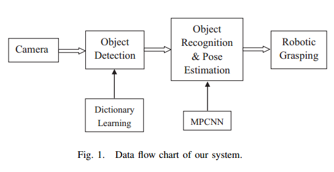
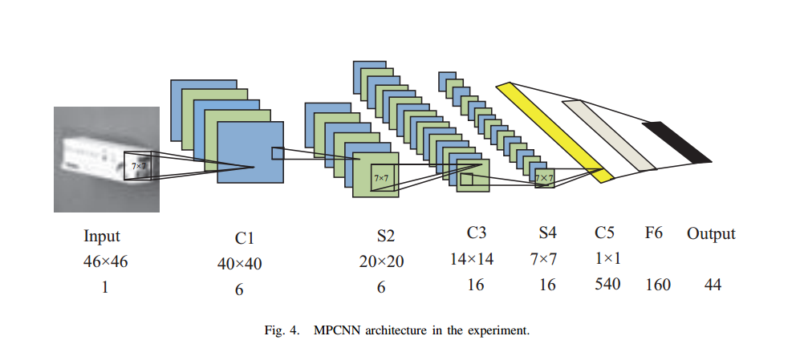
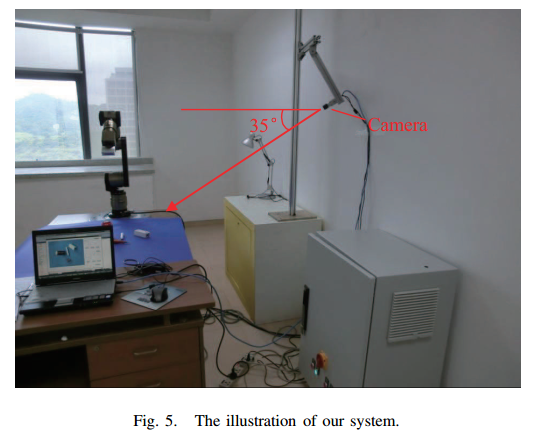

基于视觉的机器人抓取系统采用深度学习检测3D物体的位姿¶
- A Vision-based Robotic Grasping System Using Deep Learning for 3D Object Recognition and Pose Estimation
- 2013-ROBIO国际会议-广东什么实验室
1)摘要¶
- 采用最流行的深度学习模型，该模型是具有最大池化层的CNN模型，且把抓取对象的不同位姿分为不同的类。
- 提出了一个对象检测方法用于克服深度学习模型的缺点
- 构建了数据集，数据集包含5个对象的不同位姿
- 实验结果表明论文中提出的方法可以很好地识别对象和对象的位姿
2）Introduction¶
- 研究者的梦想：实现高智能的机器人
- 列举了好几篇文献并抨击他们的方法不行，要么是需要特别明显区分特征的识别方法，要么是不能正确检测对象的方法，或者在3D数据上基于边缘或表面的检测方法易受噪声的干扰
- 本论文中提出的系统结构使用深度学习模型不仅可以识别物体，而且还可以估计其姿态，系统结构如图所示：

3）Object detection¶
把图像传送给深度学习模型之前，先采用论文中提出的前景分割方法**基于字典的K均值聚类方法**从原始图像中分割出前景物体。 这个具体实现方法我没看
Object Recognition and Pose Estimation with MPCNN¶
MPCNN：就是普通具有最大池化层的CNN模型，论文中使用的是类似于LeNet5的模型结构 模型结构 
如何识别对象的类别和位姿的呢：论文中使用的数据集只包含5个不同的对象，每个对象在水平面内不同角度又分成不同的类别。比如盒子对象每30°分成一个类，盒子就占6类，作为模型最后一层输出的前6个神经元，这样就可以根据是哪一个神经元并判断出是哪个对象的哪个位姿。
4）Experiment¶
实验平台：Basler相机和光源+机器人 
数据集¶
数据集总共仅仅只有5个对象
- 训练集：1600张
- 测试集1：1980张
- 测试集2：924张
对象识别结果¶
测试集精度：94.5% 和 98.9%